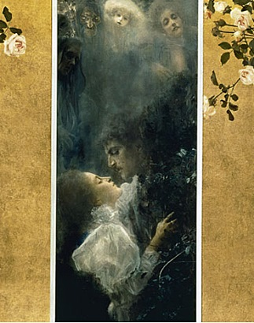
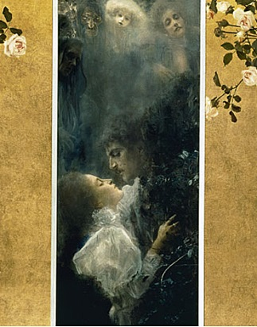
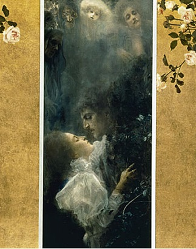
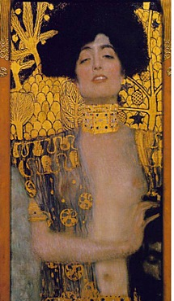
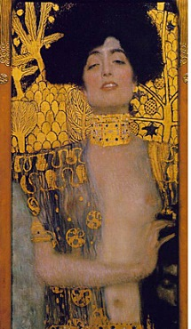

키 작은 풀꽃이 만발한 언덕 위에 두 연인이 서로에게 의지한 채 키스를 하고 있다. 금빛으로 화려하게 장식된 커다란 가운은 마치 후광처럼 빛나며 짧은 순간의 강렬한 감흥을 더해준다. 많은 사람들에게 영원한 사랑의 이미지로 남아 가장 많이 복제된 작품 중 하나인 [키스](1907)는 어딜 가도 쉽게 복제품을 볼 수 있는 그림이다. 누구의 작품인지는 몰라도 누구나 한번쯤은 본 기억의 그림이다. 이렇게 화려한 그림을 그린 사람은 과연 누구일까? 자연스럽게 화가에 대한 관심으로 이어진다. 그 화가가 바로 구스타프 클림트(Gustav Klimt)이다.
클림트는 1862년 7월 14일 오스트리아 빈 교외의 바움가르텐이라는 작은 마을에서 일곱 명 중 둘째로 태어났다. 금세공업자였던 아버지가 직업적으로 성공을 거두지 못하자 매우 궁핍한 생활을 했던 클림트는 14살이 되던 해에 다니던 학교마저 그만 두게 되었다. 그러나 그의 솜씨를 눈여겨 본 친척의 도움으로 빈의 국립 응용미술학교에 입학함으로써 직업적인 화가로서의 인생을 살게 된다. 미술학교에서 클림트는 당시 저명한 화가들의 주목을 받았고, 졸업 후에는 실내장식과 조형물 작업을 하기 시작했다. 1892년 아버지가 사망하고 몇 달 후인 12월에는 동생 에른스트가 독감에 이은 심낭염으로 사망했다. 클림트는 그 슬픔으로 인해 3년 동안 창작의 위기를 맞는다. 위기를 극복하고 제작한 [사랑](1895)은 그의 최초의 걸작이다.장식적인 배경과 인물의 사실적 표현이 대조를 이루고 있다. 사랑의 형태를 우의적으로 표현한 작품으로, 사랑하는 연인들 뒤로 질투의 얼굴들이 보이고 있는데, 이는 행복 속에 숨어있는 불안을 의미한다. 클림트의 작품 중에서 현실적인 내용과 추상적인 내용이 그림 화면 속에 동시에 등장하는 최초의 작품이기도 하다.

동생 에른스트가 죽은 후 남은 조카의 후견인이 된 클림트는 36세에 [헬레네 클림트의 초상](1898)을 완성하는데 이 작품은 동생 에른스트의 딸을 그린 것이다. 흰색과 크림색이 섞여서 순수한 느낌과 안정적인 느낌을 준다. 단발머리를 한 채 앞을 똑바로 직시하고 있는 눈은 세상을 향해 당당한 주인공의 태도를 형상화한다. 황금을 사용함으로써 클림트의 ‘황금 스타일’ 시작을 알리는 중요한 작품으로는 39세 그린 [유디트 I](1901)가 있다. 구약성서에 나오는 유디트는 아름다운 미망인으로 이스라엘을 침략한 앗시리아 장군 홀로페르네스를 유혹하여 그의 목을 베어 버리고 나라를 구한 구국의 영웅이다. 그러나 클림트 작품 속의 유디트는 어떠한 숭고한 의지도 기상도 없다. 그저 죽은 장군의 머리를 든 채 황홀경에 빠져있을 뿐이다. 클림트는 유디트의 이야기에서 주인공의 애국심 보다는 남자를 유혹함으로써 파멸에 빠뜨릴 수 있는 여성의 성적인 파워, 그 ‘위험한 마력’에 주목하고 있다.
 
